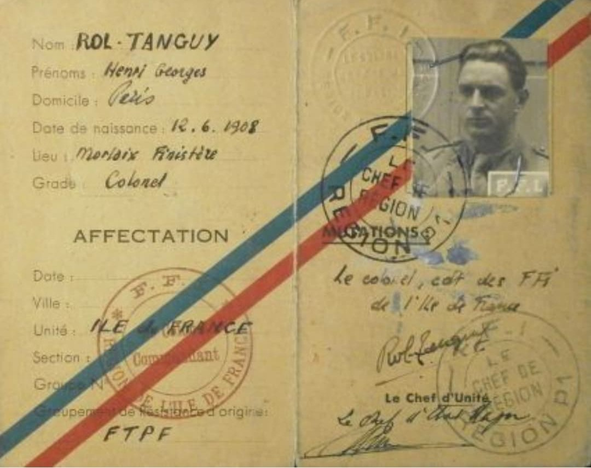

Les documents FFI regroupent les papiers utilisés par les Forces Françaises de l’Intérieur : ordres de mission, cartes de membre, laissez‑passer, faux papiers, messages codés et correspondances internes. Ils témoignent de l’organisation clandestine de la Résistance sur le territoire français.
Ces documents permettent d’identifier les membres FFI, de transmettre des ordres, d’autoriser des déplacements, de coordonner des actions armées et de maintenir une structure militaire clandestine face à l’occupant.
Les documents FFI sont souvent rédigés sous pseudonyme, avec des codes ou des abréviations. Leur découverte par l’ennemi pouvait entraîner des arrestations, des déportations ou des exécutions. Ils étaient donc cachés, brûlés après usage ou dispersés.
À partir de 1943, les FFI regroupent différents mouvements de Résistance intérieure. Les documents administratifs et militaires deviennent indispensables pour structurer les unités, préparer les combats de la Libération et assurer la liaison avec les autorités françaises libres.
Ces documents sont essentiels pour comprendre le fonctionnement de la Résistance, identifier les réseaux, retracer les actions locales et rendre hommage aux combattants FFI.